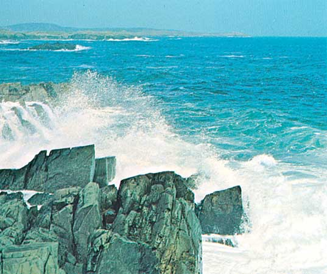

Hello,Welcome To My Photography World
Everest is composed of multiple
layers of rock folded back on
themselves (nappes). Rock on the
lower elevations of the mountain
consists of metamorphic schists and
gneisses, topped by igneous granites.
A forest is an area of land
dominated by trees. Hundreds
of definitions of forest are used
throughout the world,
incorporating factors such as
tree density, tree height, land
use, legal standing and
ecological function.
Atlantic Ocean, body of salt water
covering approximately one-fifth of Earth's
surface and separating the continents of
Europe and Africa to the east from
those of North and South America
to the west. The ocean's name, derived
from Greek mythology, means the
“Sea of Atlas.” It is second in size
to the Pacific Ocean.

Our planet's tropical regions,
located just north and south
of the equator, are known
for being warm and humid.
Some people think tropical
areas make ideal vacation spots;
others think they're just good
places for getting mosquito
bites. ... The region between each
tropic and the equator is
considered tropical.
Thank you